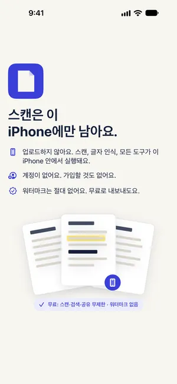

아이폰에서 스캔한 PDF 용량 줄이기 (서류 제출 용량 제한)
최종 수정 2026-10-22 · Paperkeep Pro 기능
입사 지원이나 학교 제출 페이지는 '파일당 5MB 이하'처럼 용량을 제한하는 경우가 많아요. Paperkeep Pro의 내보내기 화면은 '원본', '중간', '작게' 세 가지를 실제로 인코딩해 잰 용량을 먼저 보여 줘서, 여러 번 내보내 보며 맞출 필요가 없어요.
먼저, iOS 기본 기능으로 하는 방법
- 파일 앱에는 PDF 용량을 줄이는 메뉴가 없어요.
- 메일에 사진을 첨부하면 보낼 때 크기를 고를 수 있지만, PDF를 첨부했을 때는 그 선택지가 나오지 않아요.
- 기본 앱으로 할 수 있는 건 다시 스캔하면서 컬러 대신 회색조나 흑백 필터를 고르는 정도이고, 그러면 파일이 작아지는 경우가 많아요.
Paperkeep으로 하는 방법
- 증명서 스캔을 연 다음, 요술봉 모양 '도구' 메뉴 맨 위에 있는 '내보내기…'를 눌러요.
- 형식을 PDF 그대로 두면, 아래 '크기' 항목의 '원본', '중간', '작게' 옆에 각각의 실제 용량이 계산돼 나타나요.
- 제한보다 작은 것 중 가장 큰 크기를 골라요. 대개 '중간'이면 작은 글씨도 충분히 읽혀요.
- '공유'로 메일에 첨부하거나, '파일에 저장'으로 저장한 뒤 지원 사이트에서 그 파일을 골라 올려요.

이 문서만의 팁
- '작게'를 골랐다면 도장이나 작은 글씨가 읽히는지 PDF를 확대해서 꼭 확인하세요. 제출처가 읽지 못하면 다시 내야 해요.
- 여러 증명서를 한 파일로 내야 한다면 먼저 '합치기'로 묶은 뒤 크기를 고르세요. 합친 다음에 잰 용량이 실제로 올라갈 용량이에요.
- 제출에 필요 없는 안내 페이지는 '페이지 추출'로 빼고 보내면 용량이 더 줄어요.
- 내보낼 때 줄인 건 사본뿐이고, Paperkeep 안의 문서는 원래 화질 그대로 남아요.
곧 App Store에 출시돼요.